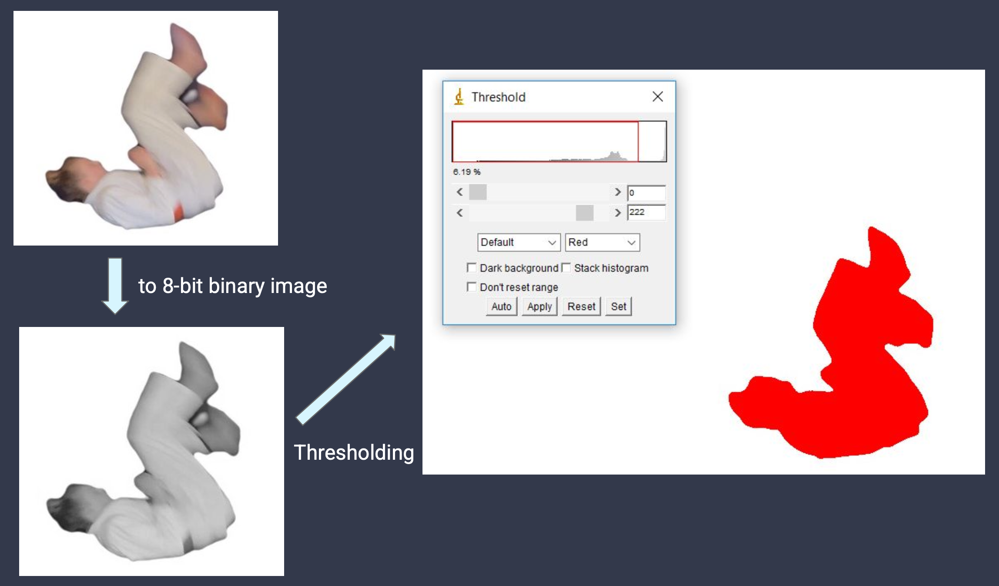

Judo Flip Trajectory Analysis


Project Summary
This interdisciplinary project combined engineering, mathematics, and kinesiology to analyze the trajectory of judo front rolls using centroid tracking. By recording and processing video of an experienced judo player and three students, we extracted centroid positions frame by frame and compared the flips. The analysis revealed that expert flips were higher and landed closer to the starting point, confirming biomechanical hypotheses. The project also highlighted the importance of accuracy, culture, and human factors in real-world data collection.
- Video Analysis: Used DartFish for frame extraction, Photoshop/AutoRemover for background removal, and FIJI/ImageJ for centroid finding.
- Mathematical Modeling: Plotted centroid trajectories and compared experienced vs. novice flips, identifying key differences in height and distance.
- Human Factors: Explored the impact of observation and culture on athlete performance and data validity.
Technical Highlights
- Sample Size: One professional (control) and three students learning judo.
- Data Collection: Used backdrops, black cloth, and tripods for cleaner video and easier processing.
- Analysis Pipeline: Frame-by-frame centroid extraction, thresholding, and trajectory plotting.
- Insights: Experts’ flips had greater height and less horizontal distance than novices; data confirmed biomechanical theory.
Lessons Learned
- Accuracy in data collection and cleaning is crucial for meaningful results.
- Human subjects research requires attention to observer effects and cultural context.
- Combining math, engineering, and sports science yields deeper insights into biomechanics.
- Manual analysis is labor-intensive; automation using Python/MATLAB is a valuable future direction.